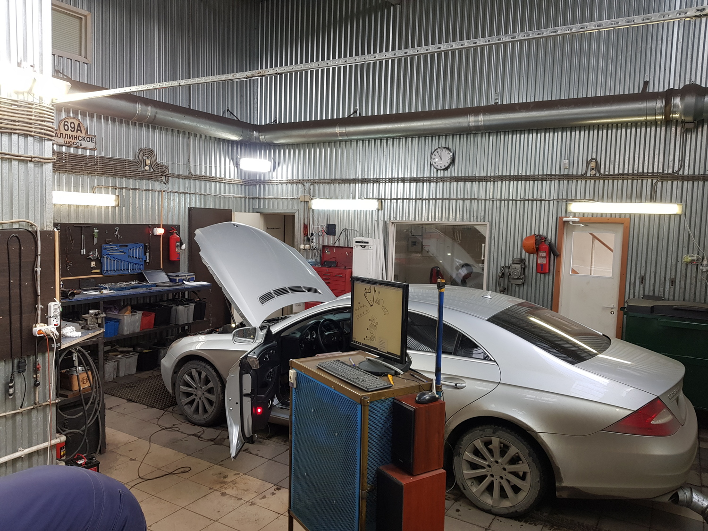
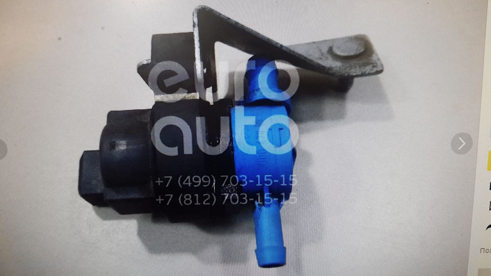

Клиент обратился с проблемами:
потрясывает на холостом ходу и иногда перед перекрёстком поднимается холостой ход до 1500 об/мин. Ошибок нет.
Соответственно изучая параметры работы двигателя было сделано предположение о подсосе воздуха во впускном тракте. До дымогенератора дело не дошло! Помог элементарный баллон очистителя карбюратора.

Также был обнаружен неисправный (заклинивший в открытом положении) клапан вентиляции бака.
